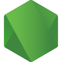
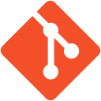
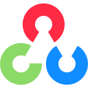

Stacktale
Worked on parser edge cases and navigation behavior with Java, Gradle and automated tests.
View a pull requestABOUT / THE PERSON BEHIND THE CODE
I’m Janith, a Software Engineering undergraduate in Colombo. I’m drawn to the point where a real problem meets a clear, dependable piece of software.
01 / MY APPROACH
I like to start by understanding the people and process behind a feature. Then I work through the data, API and interface until the whole journey makes sense.
My projects have taken me from full-stack business systems and Java backend work to Android development and computer vision. Each one has strengthened a different part of my engineering practice.
I’m looking for an internship where I can contribute to a real team, learn from feedback and keep improving how I build software.
02 / TECHNICAL TOOLKIT
Tools I’ve used in coursework, personal projects and open-source contributions.

Node.jsMongoDBMySQL
Git
OpenCVAlso working with REST APIs, JPA / Hibernate, Thymeleaf, Express, Postman, Maven, Gradle and testing workflows.
03 / OPEN SOURCE
Small, focused contributions to projects maintained by others.
Worked on parser edge cases and navigation behavior with Java, Gradle and automated tests.
View a pull requestContributed issue forms, documentation and language-support configuration through pull request workflows.
View repositoryImproved documentation on setup, concepts and API usage for new contributors and developers.
View repository